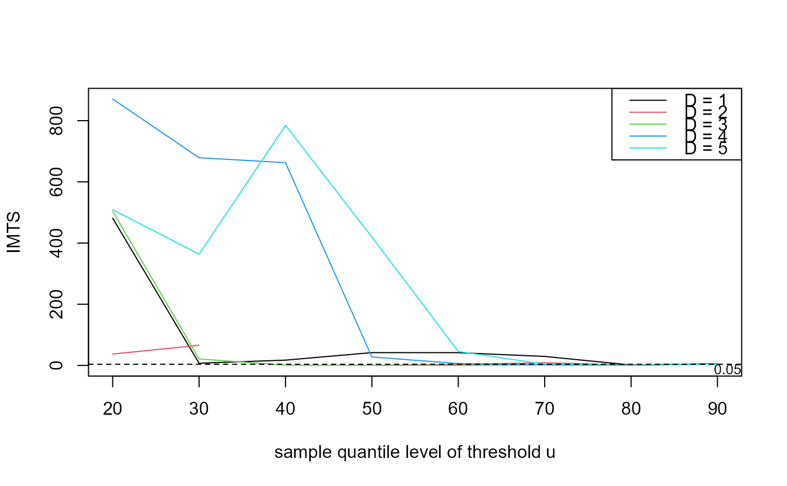
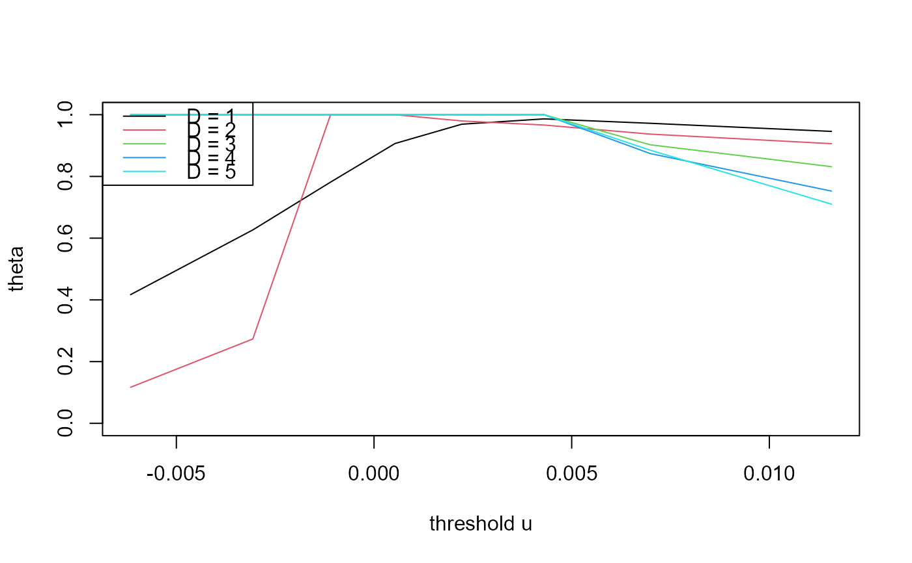
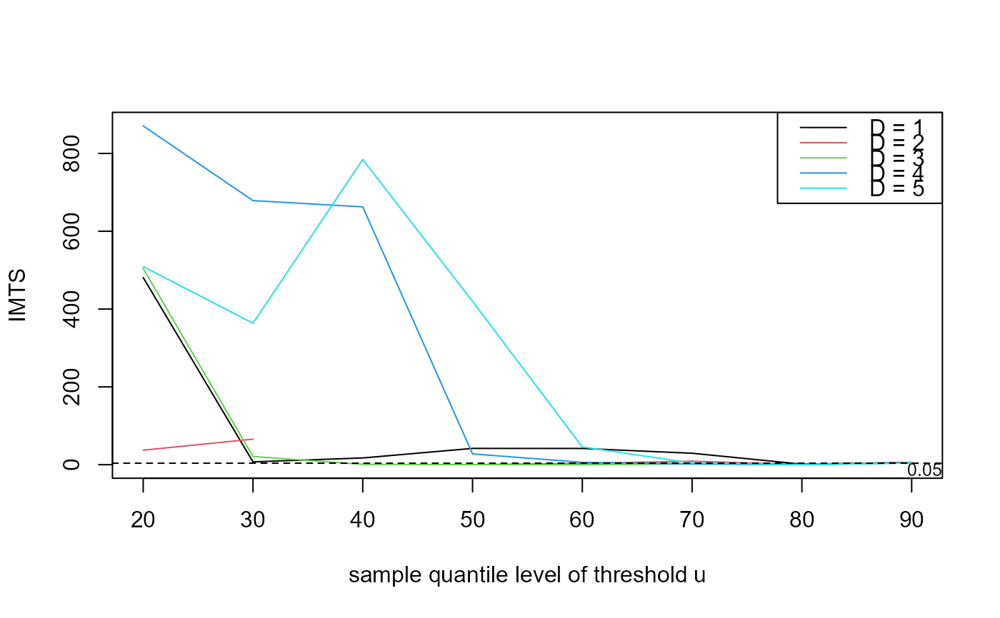
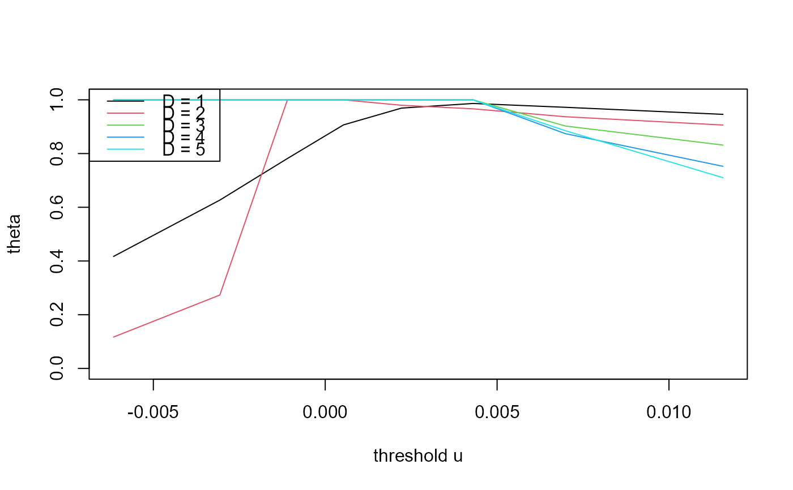

Threshold \(u\) and runs parameter \(D\) diagnostic for the \(D\)-gaps estimator
Source:R/choose_uD.R
choose_ud.RdCreates data for a plot to aid the choice of the threshold and
run parameter \(D\) for the \(D\)-gaps estimator (see
dgaps). plot.choose_ud creates the plot.
choose_ud(data, u, D = 1, inc_cens = TRUE)Arguments
- data
A numeric vector or numeric matrix of raw data. If
datais a matrix then the log-likelihood is constructed as the sum of (independent) contributions from different columns. A common situation is where each column relates to a different year.If
datacontains missing values thensplit_by_NAsis used to divide the data into sequences of non-missing values.- u, D
Numeric vectors.
uis a vector of extreme value thresholds applied to data.Dis a vector of values of the run parameter \(D\), as defined in Holesovsky and Fusek (2020). Seedgapsfor more details.Any values in
uthat are greater than all the observations indatawill be removed without a warning being given.- inc_cens
A logical scalar indicating whether or not to include contributions from right-censored inter-exceedance times, relating to the first and last observations. It is known that these times are greater than or equal to the time observed. If
datahas multiple columns then there will be right-censored first and last inter-exceedance times for each column. See Details indgaps.
Value
An object (a list) of class c("choose_ud", "exdex")
containing
Details
For each combination of threshold in u and \(D\)
in D the functions dgaps and dgaps_imt
are called in order to estimate \(\theta\) and to perform the
information matrix test of Holesovsky and Fusek (2020).
References
Holesovsky, J. and Fusek, M. Estimation of the extremal index using censored distributions. Extremes 23, 197-213 (2020). doi:10.1007/s10687-020-00374-3
See also
dgaps for maximum likelihood estimation of the
extremal index \(\theta\) using the \(D\)-gaps model.
dgaps_imt for the information matrix test under the
\(D\)-gaps model
plot.choose_ud to produce the diagnostic plot.
Examples
### S&P 500 index
# Multiple thresholds and left-censoring parameters
u <- quantile(sp500, probs = seq(0.2, 0.9, by = 0.1))
imt_theta <- choose_ud(sp500, u = u, D = 1:5)
plot(imt_theta)
 plot(imt_theta, uprob = TRUE)

plot(imt_theta, y = "theta")

# One left-censoring parameter D, many thresholds u
u <- quantile(sp500, probs = seq(0.2, 0.9, by = 0.1))
imt_theta <- choose_ud(sp500, u = u, D = 1)
plot(imt_theta)
plot(imt_theta, y = "theta")
# One threshold u, many left-censoring parameters D
u <- quantile(sp500, probs = 0.9)
imt_theta <- choose_ud(sp500, u = u, D = 1:5)
plot(imt_theta)
plot(imt_theta, y = "theta")
### Newlyn sea surges
u <- quantile(newlyn, probs = seq(0.1, 0.9, by = 0.1))
imt_theta <- choose_ud(newlyn, u = u, D = 1:5)
plot(imt_theta, uprob = TRUE)
### Cheeseboro wind gusts (a matrix containing some NAs)
probs <- c(seq(0.5, 0.95, by = 0.05), 0.99)
u <- quantile(cheeseboro, probs = probs, na.rm = TRUE)
imt_theta <- choose_ud(cheeseboro, u, D = 1:6)
plot(imt_theta, uprob = FALSE, lwd = 2)
plot(imt_theta, uprob = TRUE)

plot(imt_theta, y = "theta")

# One left-censoring parameter D, many thresholds u
u <- quantile(sp500, probs = seq(0.2, 0.9, by = 0.1))
imt_theta <- choose_ud(sp500, u = u, D = 1)
plot(imt_theta)
plot(imt_theta, y = "theta")
# One threshold u, many left-censoring parameters D
u <- quantile(sp500, probs = 0.9)
imt_theta <- choose_ud(sp500, u = u, D = 1:5)
plot(imt_theta)
plot(imt_theta, y = "theta")
### Newlyn sea surges
u <- quantile(newlyn, probs = seq(0.1, 0.9, by = 0.1))
imt_theta <- choose_ud(newlyn, u = u, D = 1:5)
plot(imt_theta, uprob = TRUE)
### Cheeseboro wind gusts (a matrix containing some NAs)
probs <- c(seq(0.5, 0.95, by = 0.05), 0.99)
u <- quantile(cheeseboro, probs = probs, na.rm = TRUE)
imt_theta <- choose_ud(cheeseboro, u, D = 1:6)
plot(imt_theta, uprob = FALSE, lwd = 2)
 ### Uccle July temperatures
probs <- c(seq(0.7, 0.95, by = 0.05), 0.99)
u <- quantile(uccle720m, probs = probs, na.rm = TRUE)
imt_theta <- choose_ud(uccle720m, u, D = 1:5)
plot(imt_theta, uprob = TRUE, lwd = 2)
### Uccle July temperatures
probs <- c(seq(0.7, 0.95, by = 0.05), 0.99)
u <- quantile(uccle720m, probs = probs, na.rm = TRUE)
imt_theta <- choose_ud(uccle720m, u, D = 1:5)
plot(imt_theta, uprob = TRUE, lwd = 2)